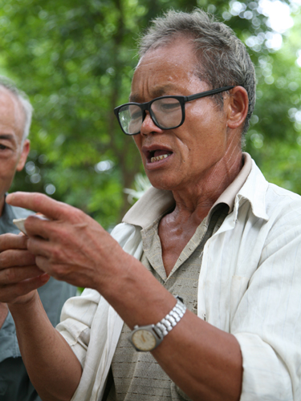

广西平果原生态民歌---嘹歌
嘹歌是流行于广西右江中游的平果、田东、田阳县和红水河流域的马山县、大化瑶族自治县以及属邕江流域的武鸣县境内的一种壮族民歌。
《嘹歌》大致可分为以下三种：第一种是“哈嘹”，即以第一乐句句末、首句歌词衬词“哈嘹”来划分，此曲高亢、激越、悠扬。第二种是“嘶咯嘹”，以第二乐句和第四乐句、第二句歌词和第四句歌词的衬词“嘶咯”来划分（引歌句除外），此曲高亢、激越、自由、抒情。第三种是“的喀嘹”，以引歌乐句、衬词“的喀”来划分，此曲自由、抒情。


